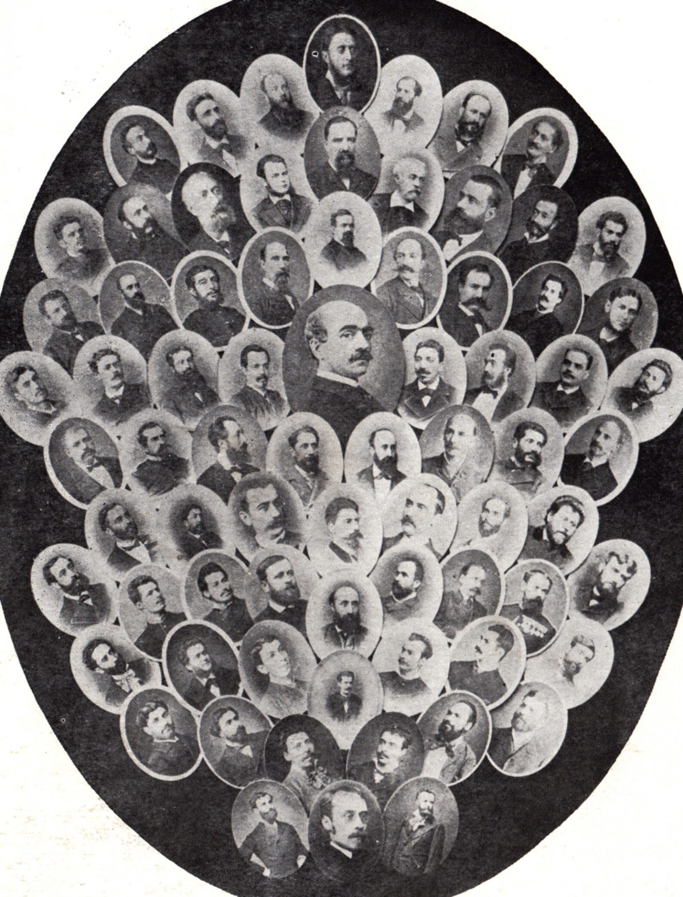

Societatea Junimea si membrii ei
Înfiinţată la Iaşi la sfârşitul lui 1863, societatea „Junimea” s-a
manifestat în diverse domenii precum: estetică, filosofie, filologie
clasică, arheologie. Membrii săi fondatori au fost: P.P. Carp, Titu
Maiorescu, Iacob Negruzzi, Vasile Pogor şi Theodor Rosetti.
Societatea a avut un rol semnificativ în dezvoltarea culturii române,
găsind diverse forme de manifestare: întruniri săptămânale, „prelecţiuni
populare”, editarea unor reviste şi ziare, înfiinţarea unor tipografii.
A impus prin mentorul său, Titu Maiorescu, sistemul de scriere ce se
află la baza ortografiei actuale.

Junimea
Societatea a dus la descoperirea şi aprecierea celor mai de seamă
scriitori români din secolul al XIX-lea: Mihai Eminescu, I.L. Caragiale,
Ion Creangă, fiind considerată cea mai importantă mişcare literară a
anilor 1850 – 1900.
Numărul membrilor săi a crescut semnificativ în fiecare an; înscrierea
se făcea după deviza: „Intră cine vrea, rămâne cine poate”. La „Junimea”
a predominat spiritul critic şi ironia fină. Alţi membri importanţi care
au făcut parte din societate sunt: N. Culianu, Gh. Racoviţă, N. Mandrea,
N. Skelitti, N. Gane, Th. Șerbănescu, Gh. Negruzzi, V. Conta, I.
Slavici, A. D. Xenopol, Al. Philippide etc.. Vasile Alecsandri a fost
membru de onoare al „Junimii”. Întrunirile aveau loc săptămânal în
casele lui Titu Maiorescu şi Vasile Pogor.
La 1 martie 1867 a apărut revista societăţii, „Convorbiri literare”,
care a continuat din multe puncte de vedere „Dacia literară” şi „România
literară”.
Iacob Negruzzi era secretarul perpetuu al „Junimii”, redactor neobosit
al „Convorbirilor literare”. Lucrarea lui Maiorescu, „În contra
direcţiei de astăzi în cultura română” (1868), era teza directoare a
ideologiei junimiste, prin care se constata o discrepanţă între fondul
nostru social-economic şi forma politico-juridică, între tradiţie şi
împrumutul străin, între cultură şi civilizaţie. Prin cunoscuta teorie a
formelor fără fond, Maiorescu a stabilit o ideologie bazată pe
principiile:
- absoluta potrivire între fond şi formă: decât o formă goală, fără implicarea conţinutului, mai bine fără cărţi, reviste, licee, universităţi;
- inaugurarea spiritului critic;
- aşezarea criticii în marginile adevărului.
Junimiştii erau pentru orientarea culturii române spre germanism,
reprezentat de Hegel, Fichte, Scheling, Kant, influenţaţi fiind de
studiile din Germania de după 1848.
La „Junimea”, Eminescu reprezenta interesele răzeşimii, ale meseriaşilor
şi ale proletariatului intelectual.